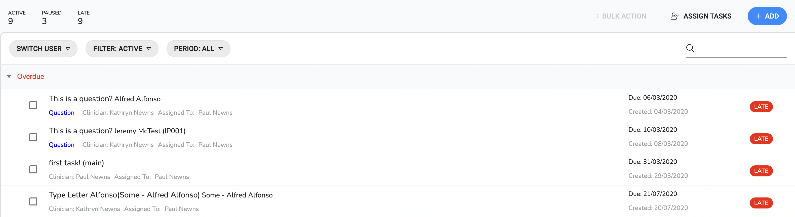
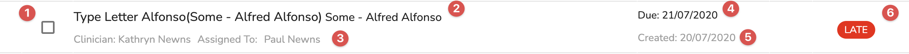
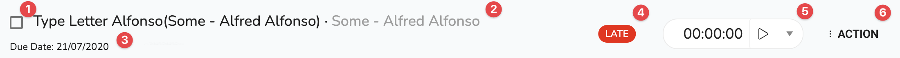
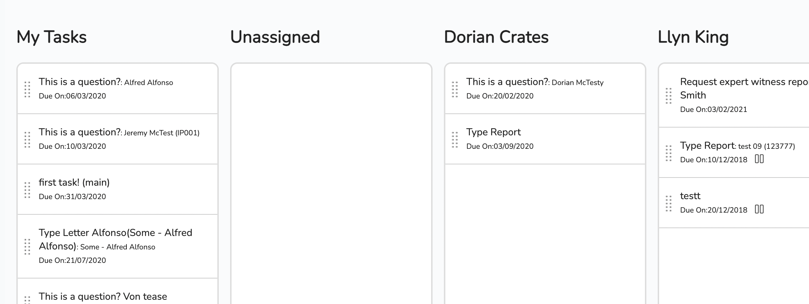
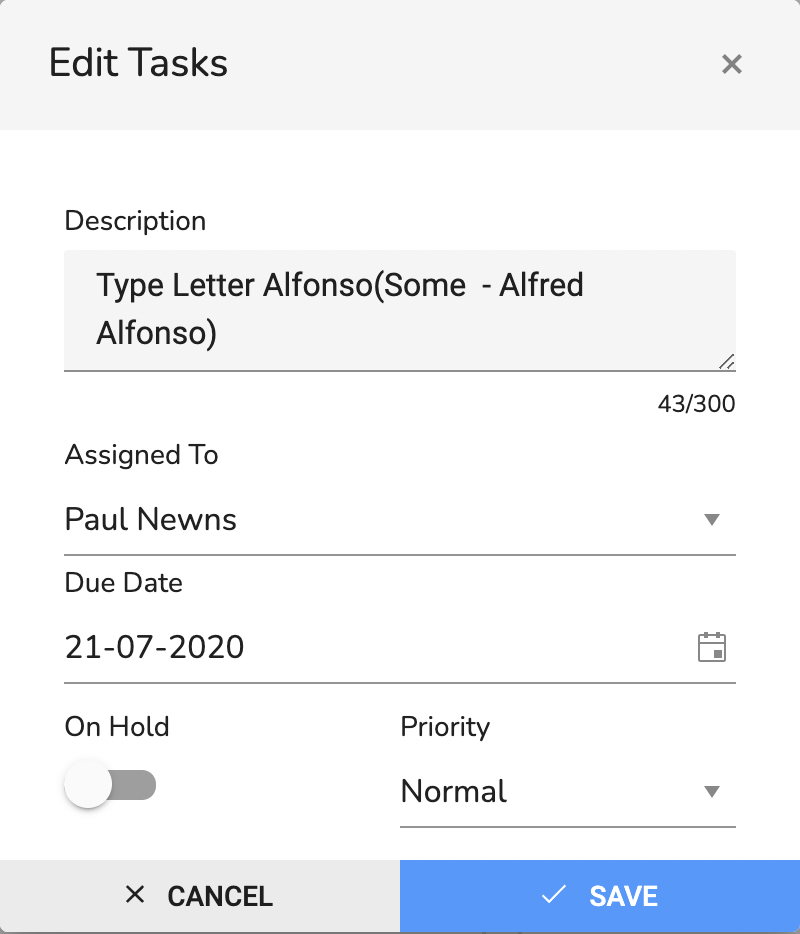

Overview
Tasks are activities that a user has to do. They can be linked together so that the completion of one task activates the next and are a core part of inClinic. They can either be manually created or created via the system using workflows.
Tasks List
This view lists all your active tasks. You can view the task from here, filter the task list and apply bulk actions to the tasks. The bottom left of the list shows some simple stats for you.
The page is split into three areas:
- ToolBar
- Filter Bar
- Tasks List
Toolbar
On the left are three numbers. The first is the number of active tasks you have. The second is the number of tasks on hold and the last is the number of late tasks. On the right hand side the toolbar has three buttons:
| Icon | Label | Purpose |
|---|---|---|
| Bulk Action | This is menu to use with selected tasks (see below) | |
| Assign Tasks | This opens the task assignment page. | |
| Add | This opens the add Task dialog. |
Filter Bar
This is a set predefined filters
| Icon | Label | Position | Purpose |
|---|---|---|---|
| Switch Users | Left | Shows the tasks of the selected user. | |
| Filter:? | Left | Filters the tasks by status. When the page opens the filter is set to Active. The question mark is where the current status filter shows. | |
| Period:? | Left | Filters the tasks by period. When the page opens the filter is set to All. The question mark is where the current period filter shows. | |
| Right | This text field will filter the tasks by description. |
Tasks List
The tasks are listed in date order and each line has contains information about the task.
To open the task then click anywhere on the line except on the checkbox.
| Number | Label | Description |
|---|---|---|
| 1 | This is for the selection of multiple tasks and using the bulk actions against | |
| 2 | Details | This is the task details information |
| 3 | Assignment | This is who is the associated clinician and who is assignee to the task |
| 4 | Due On | When is the task due |
| 5 | Created On | When was the task created |
| 6 | Status | Status information |
Bulk Actions
In addition there is bulk actions. Bulk actions can apply changes to multiple tasks in one go.
You can select multiple tasks by clicking on the checkbox for each one you want to change. When a task or tasks are selected this way then the Bulk Actions button will no longer be grayed out and you will be able to apply an action from the dropdown menu.
Available actions are:
| Label | Purpose |
|---|---|
| Complete | Set task(s) status to complete. |
| Assign To | Assign all selected tasks to a user. |
| Set On Hold | Set task(s) to on hold (Paused). |
| Priority | Change the priority of all selected tasks. |
Task Page
This is a worksheet for the task. It displays information about the and ways of interacting with the task and other related information.
The display contains three main areas the header and the tabs area:
- Toolbar
- Tabs
- Display Area
Toolbar
This is where we can manipulate the task. | Number | Label | Description |
|---|---|---|
| 1 | Clicking this will complete/uncomplete the task. | |
| 2 | Details | This is the task details information. |
| 3 | Due Date | The due date of the task |
| 4 | Status | The status of the task. |
| 5 | A Timer | Enables the user to record the amount of time taken on a task. |
| 6 | Action | A menu for actions associated with the task. |
Tabs
The tab areas are for interaction and further information:
| Icon | Tab Name | Description |
|---|---|---|
| Overview | The overview shows related information to the task like the client, case, and incident information and also show a comment input area. | |
| Documets | The documents tab shows the case or the queries documents.. See Documents. | |
| Process Notes | This shows case notes. | |
| Quieries | This shows any queries related to the case. | |
| Charges | This shows all charges related to the parent(eg. appointment) |
Display
This is the display area when you click on a tab. The page shows the overview when loaded.
| Icon | Tab Name | Description |
|---|---|---|
| Complete | This completes the task. If this is a chain of tasks then it will activate the next one in the list. | |
| Set On Hold | Sets the task to on hold.. | |
| Edit | Opens a dialog to edit the task. | |
| Fill Word Template | Opens a dialog to fill the word template based on the current records | |
| Add Case Information | Add additional case information. | |
| View Client | Jumps to the associated client page | |
| View OCR | Opens a dialog to upload an image and return the image text. | |
| Delete | Delete the task. |
How to..
How do I assign a task?
There are a few ways of doing this. You can do this on the task list page with bulk assignment using the checkboxes and the bulk actions menu. You can do this in the task by editing the task from the task page by clicking the edit action.
Or you can do it in the assign tasks page:
The task assign page enables you to drag active tasks between users. It also enables us to unassign tasks if we want users to choose their own tasks.
Your column is always the first column and the unassign column is second.
- In the task list click on ASSIGN TASKS to open the task assign page.
- Click and hold on any of the tasks.
- Drag it to the column of the user you want to assign it to.
- Release the mouse button. The task has been assigned to person whose column you droppped it in.
How do I edit a task?
- In the task page click on ACTIONS and then select edit to open the task edit dialog.
- [Optional] edit the description.
- [Optional] change who it is assigned to via the dropdown.
- [Optional] Change the due date by selecting a new date.
- [Optional] Change the 'On Hold' switch.
- [Optional] Change the 'Priority' with the dropdown.
- Either save the changes by clicking
 SAVE or discard change by clicking CANCEL or the cross in
the header.
SAVE or discard change by clicking CANCEL or the cross in
the header.
How to set triggers when a task is activated?
-
Set the Global trigger for a task activating:
- Navigate to company Settings by going to clicking settings and selecting company.
- Choose the trigger tab.
- In the task section select the appriate workflow from the dropdown.
- Either save the changes by clicking
SAVE or discard change by clicking CANCEL or the
cross in
the header.
- Set the user to recieve notification:
- Navigate to company Settings by going to clicking settings and selecting user.
- Select the user who you want to automatically notify.
- Under the 'General' tab set 'Notify Active Task' switch to on.
- Either save the changes by clicking
SAVE or discard change by clicking CANCEL or the
cross in
the header.